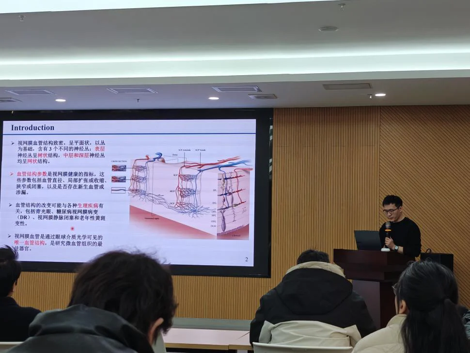
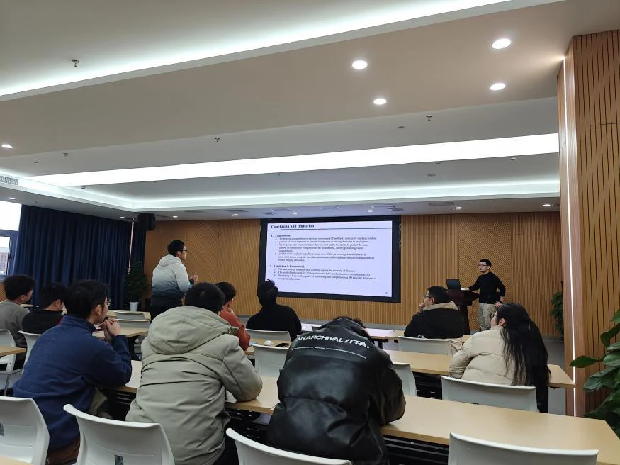
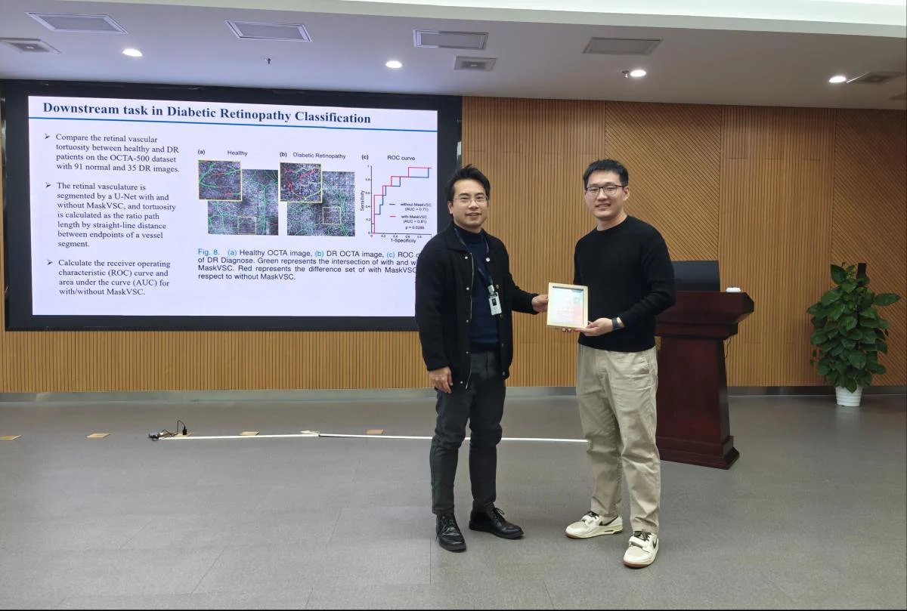

近日，中国科学院宁波材料技术与工程研究所举办了“医学图像/眼科影像专题学术分享会——iMED中国第六十九讲”，邀请新加坡眼科研究所周毅博士担任主讲嘉宾，分享了其在视网膜图像血管结构智能分析方面的最新研究成果。

周毅博士以“Masked vascular structure segmentation and completion in retinal images”为题进行了学术报告。报告指出，眼底疾病的早期细微血管变化通常发生在微观层面，对其进行精准评估对理解血管病理学和辅助疾病管理至关重要。然而，受限于现有视网膜成像技术的对比度与分辨率，从中提取连续、完整的微血管网络（包括毛细血管）极具挑战，常导致血管网络呈现断裂片段。
针对这一难题，周毅博士详细介绍了一种新颖的、与骨干网络无关的掩模血管结构分割与补全方法。该方法通过主动模拟血管缺失部分来训练模型，使其能够有效预测并重建断裂的血管网络。该方法不仅降低了对大量精细标注数据的依赖，还通过引入专门的连接性损失函数来优化网络连通性。实验表明，该方法在多种视网膜图像数据集上，在保持血管网络完整性和分割精度方面均优于现有先进技术，且具有良好的骨干网络通用性与性能提升能力。
报告结束后，现场听众就血管结构分割的技术细节、方法在临床中的应用潜力、多模态影像分析以及医学AI模型的可解释性等议题，与周毅博士进行了深入而热烈的交流讨论。周毅博士对问题进行了详尽而富有洞见的解答，其扎实的研究工作和清晰的阐述给与会者留下了深刻印象。

本次活动为医学影像分析、人工智能与临床眼科学交叉领域的科研人员搭建了高质量的学术交流平台，拓宽了与会者的学术视野，激发了新的研究思路。未来，研究所将继续加强此类学术活动，促进跨领域、跨机构的深度合作，共同推动前沿技术在医疗健康领域的创新与应用。

编辑：沈德民